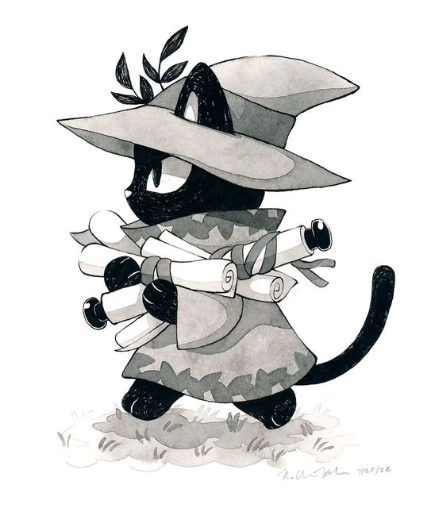

Hi, this is Kuro!

Kuro is a litle busy cat that love reading and writing. But dont get it wrong, Kuro is also a full stack developer with 2 years of experience in both application and presentation layers. He have worked on applications and microservices deployed on IBM Cloud. He is also an avid user of IBM Watson Services and have worked on Watson Assistant, NLU, Sentiment analyzer to name a few.